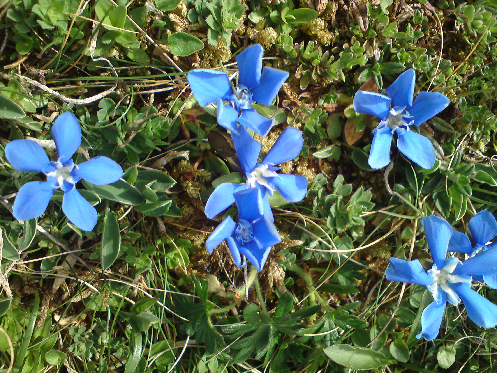

My favourite places to see in Ireland
There are lots of places to go and see in Ireland. here is a small selection!
The Cliffs of Moher
The Cliffs of Moher are found in County Clare, where I am from. They are well worth a visit

The Burren
The Burren is an area in County Clare and Galway covered in unusual limestone rock formations. It was formed by glaciers moving along the landscape, carving out paths in the soft rock. You can walk for miles along limestone pavements: large flat rocks separated by deep crevasses.

The Burren has its own special wildlife and plant life due to having a climate that's different from the rest of Ireland. You can see flowers there that don't grow anywhere else in the countryside. You must not pick them, because the landscape is protected.
Achill Island
This is a large island off the coast of County Mayo. It has a wild and beatiful landscape of mountains, bogs and cliffs

Fota Wildlife Park
..weknegrjknnghisfdhivfddhidfghigfhifdhibfhibiudfjbfgjbfgjbfgj

Newgrange
The Newgrange monument primarily consists of a large mound, built of alternating layers of earth and stones, with grass growing on top and a reconstructed facade of flattish white quartz stones studded at intervals with large rounded cobbles covering part of the circumference. It consists of about 200,000 tonnes of material. The mound is 85 metres (279 ft) wide at its widest point[10] and 12 metres (39 ft) high, and covers 4,500 square metres (1.1 acres) of ground. Within the mound is a chambered passage, which may be accessed by an entrance on the southeastern side of the monument. The passage stretches for 19 metres (60 ft),[11] or about a third of the way into the centre of the structure. At the end of the passage are three small chambers off a larger central chamber with a high corbelled vault roof. Each of the smaller chambers has a large flat "basin stone" where the bones of the dead may have been deposited during prehistoric times. Whether it was a burial site remains unclear. The walls of this passage are made up of large stone slabs called orthostats, twenty-two of which are on the western side and twenty-one on the eastern side. They average 1½ metres in height;[12] several are decorated with carvings (as well as graffiti from the period after the rediscovery). The orthostats decrease in height the further into the passageway as a result of the passage being slightly graded from being constructed on the rise of a hill.[13] The ceiling shows no evidence of smoke.

Places to Visit in Dublin
Dublin is the capital city of Ireland. Here are some of the things to see there:
- Dublin Zoo
- Wax Museum
- Epic Ireland